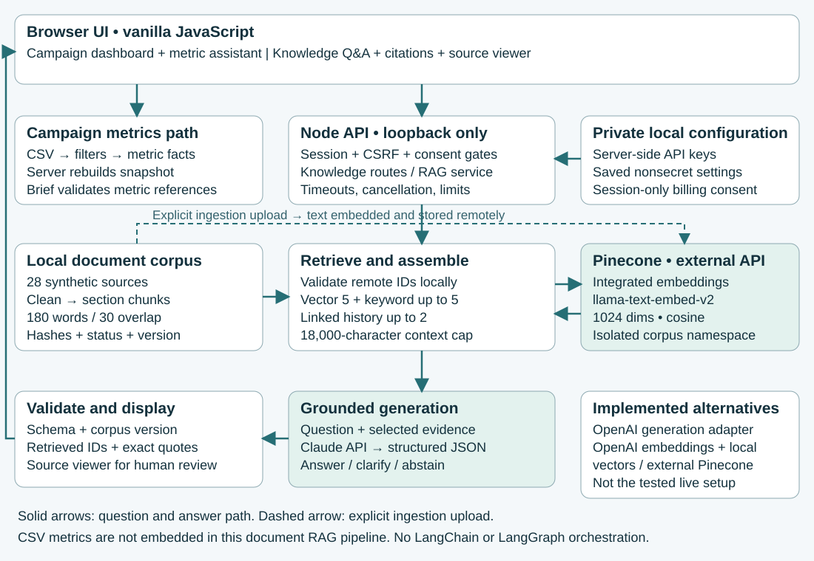

Campaign Compass combines a synthetic campaign dashboard with a separate source-grounded document Q&A workflow. Plain browser JavaScript and Node ES modules implement the orchestration; LangChain and LangGraph are not used. A migration is a later plan.

The green components mark the tested external-service path. The diagram shows logical components, not separate deployed microservices. The application runs as a single-user local service.
Conversational Ask: The browser sends the latest question and up to four completed exchanges. Conservative product resolution feeds fresh retrieval; history is untrusted context, never source evidence. Current filters and corpus freshness remain authoritative. New chat/reload clears history. This update was verified with local fixtures; no paid re-evaluation was performed.
The original Luma Trail teaching corpus contains 28 synthetic Markdown/text sources and 119 chunks. It includes products, brand guidance, claims, policies and historical versions. These are original demo documents, not real customer files; the corpus declares MIT demo-content licensing.
data/knowledge/corpus/. It accepts bounded regular Markdown/text files and rejects unsafe filenames, symbolic links and invalid metadata.supersededBy. Content hashes, stable chunk IDs and a corpus hash identify the exact source/configuration revision.npm run knowledge:ingest writes data/knowledge/index.json and reports added, changed and deleted sources. This is an explicit action, not a scheduled watcher.Section-based chunks retain coherent product and policy passages; overlap helps longer sections cross window boundaries. Version metadata separates current claims from expired or superseded information. The small corpus is also searchable locally, allowing keyword coverage without another provider request. Chunk size and similarity threshold are engineering defaults, not experimentally optimized settings.
Code: server/knowledge.mjs, scripts/ingest-knowledge.mjs, server/pinecone.mjs.
llama-text-embed-v2, 1024 dimensions and cosine similarity. Default top-k is five; minimum score is 0.2 and is not calibrated. Current questions filter to active sources unless explicit source IDs are selected.supersededBy to retrieved active sources. Explicit source filters take precedence. With no vector result, keyword supplementation does not bypass the empty-vector gate.claude-opus-5-5 with a 2048-token output cap. Request JSON with answer, clarification or insufficient-evidence status and cited factual claims. Treat question/source content as untrusted data. No context means no generation call.Code: src/knowledge-ui.mjs, server.mjs, server/rag.mjs, server/knowledge-context.mjs. OpenAI generation and external embedding/local-vector paths are implemented alternatives; they are not the configuration evaluated in the saved live runs.
data/campaigns.csv feeds deterministic parsing, filters, totals, ratios and scenarios in src/metrics.mjs. The server independently rebuilds the metric snapshot for /api/snapshot and /api/brief, rejects stale snapshot IDs and validates metric-based output. An optional selected model adapter can generate briefs; a deterministic demo/fallback path also exists. This workflow does not ingest CSV rows into the document vector index. Source-grounded campaign drafting is a potential extension, not a separate implemented RAG publishing pipeline.
The Node server binds to loopback, allowlists public assets and applies same-origin/CSRF checks, bounded requests and cancellation. API credentials remain in server-side local plaintext key storage; they are not sent back to the browser. This is not an encrypted secret vault. Nonsecret model/storage choices persist separately in key.json.settings.json; billing consent and connection verification are session/runtime state. Provider calls require explicit permission. The tested path sends approved corpus text/query data to Pinecone and selected evidence/question data to Anthropic. No multi-tenant authentication or production deployment boundary is claimed.
Offline: 210 unit tests, build and 67 relevant browser checks passed in retained evidence. Mock provider fixtures test contracts and UI behavior; they do not establish live answer quality. Offline lexical mode returns source matches without embedding or generation.
Live: The preserved 30-question baseline had 23 complete, 3 partial, 2 missing-evidence and 2 validation-error outcomes. A separately approved seven-case development follow-up completed five and rejected two (K08/K30); 14 accepted factual claims were source-reviewed. K08 had expected context; K30 still lacked the Supersession section. Exact rejected citation fields and raw rejected text were not retained, so root cause remains uncertain. Citation formatting is not an established diagnosis.
The follow-up pipeline median was 6.93 seconds and maximum 11.79 seconds, excluding browser overhead. The user-visible sub-ten-second target and accuracy on unseen questions remain unproven. The 3:27 demo explicitly replays saved live results; it is not a fresh provider run. No new paid calls were made for this architecture document.
UI: src/app.mjs, src/knowledge-ui.mjs
API and metrics: server.mjs, server/inference.mjs
Providers and state: server/api-providers.mjs, server/key-store.mjs, server/local-settings.mjs
Results: evidence/live-evaluation-reviewed-2026-10-19.json, evidence/live-seven-development-review-2026-10-19.json
Functional checks: evidence/knowledge-coverage-tests.txt and browser QA evidence.
All paths are relative to the campaign-compass-ai repository. Snapshot: 19 October 2026.
The original live baseline contains 30 questions, run once on 19 October 2026. Complete/partial/failure judgments below come from AI-assisted qualitative source review, not independent human grading. Automatic checks assessed response structure, quote membership, expected response state and retrieval recall; these do not prove semantic support or completeness. Question wording is copied exactly from the retained raw export.
14 complete; 1 task failure (K08).
| Exact question and expected behavior | Observed baseline outcome and review |
|---|---|
| K01 · What is the capacity and material of the Switchback bottle? Expected: 650 milliliters; stainless steel body and polypropylene lid. | Complete Returned state: answered Correct standard bottle capacity/materials; explicitly distinguishes Mini. |
| K02 · How should I clean the Dayline pack? Expected: Spot-clean with mild soap, air dry; no machine wash. | Complete Returned state: answered All cleaning instructions and weather limitation supported. |
| K03 · What does standard shipping cost and when is it free? Expected: 6 demo USD; free for post-discount merchandise subtotal at least 75 demo USD. | Complete Returned state: answered Correct post-discount threshold, boundary and shipping cost; extra delivery facts supported. |
| K04 · What is the return window for unused products? Expected: 30 calendar days after delivery with proof of purchase. | Complete Returned state: answered Correct unused-item return window, proof and postage qualifications. |
| K05 · When does the Autumn Everyday campaign end? Expected: October 31, 2026. | Complete Returned state: answered Correct campaign and offer end date. |
Original baseline preserved. Results below are qualitative review judgments, separate from automatic citation checks.
14 complete; 1 task failure (K08).
| Exact question and expected behavior | Observed baseline outcome and review |
|---|---|
| K06 · What voice should Luma Trail use? Expected: Practical, warm, specific; avoid superlatives and urgency pressure. | Complete Returned state: answered Correct voice, audience scope and fictional provenance. |
| K07 · Can a Dayline pack campaign say it is waterproof? Expected: No; light-splash resistance only, explicitly not waterproof. | Complete Returned state: answered Correct prohibition and permitted splash-resistance alternative; audience desire is not evidence. |
| K08 · What is the Switchback bottle price with EVERYDAY10, and does this order get free shipping? Expected: 25.20 demo USD merchandise plus 6 shipping; below 75 threshold. Arithmetic must be identified. | Task failed Returned state: insufficient_evidence Task failed: shipping Delivery section absent from top five and supplied context (recall 2/3). Conservative abstention; corpus supports 28 x 0.9 = 25.20 merchandise plus 6 shipping. |
| K09 · What capacity and brand voice can a Dayline pack social caption use? Expected: 18 liters; practical warm voice; factual citations and human review. | Complete Returned state: answered Correct 18-liter capacity, practical warm voice, factual caption guidance and human approval. |
| K10 · May a Switchback bottle caption promise cold water for 24 hours? Expected: No approved temperature-retention duration. | Complete Returned state: answered Correctly rejects unsupported 24-hour temperature promise. |
Original baseline preserved. Results below are qualitative review judgments, separate from automatic citation checks.
14 complete; 1 task failure (K08).
| Exact question and expected behavior | Observed baseline outcome and review |
|---|---|
| K11 · Is it safe? Expected: Clarify product and intended use; do not infer safety. | Complete Returned state: clarification Appropriate clarification asks product and intended safety/use context. |
| K12 · Which one is best? Expected: Clarify needs and product; no unsupported ranking. | Complete Returned state: clarification Appropriate clarification asks compared products and carrying needs; no invented ranking. |
| K13 · Who manufactures the Switchback bottle? Expected: Abstain: supplier identity not provided. | Complete Returned state: insufficient_evidence Appropriate abstention: manufacturer identity absent. |
| K14 · How many Dayline packs are in stock today? Expected: Abstain: no inventory counts. | Complete Returned state: insufficient_evidence Appropriate abstention: no live inventory. |
| K15 · What conversion lift will EVERYDAY10 produce? Expected: Abstain: no conversion-lift experiment or forecast. | Complete Returned state: insufficient_evidence Appropriate abstention: no causal lift evidence or forecast. |
Original baseline preserved. Results below are qualitative review judgments, separate from automatic citation checks.
9 complete; 3 partial; 1 task failure; 2 validation errors.
| Exact question and expected behavior | Observed baseline outcome and review |
|---|---|
| K16 · What is the Waypoint sling capacity and list price? Expected: 3 liters and 35 demo USD. | Complete Returned state: answered Correct 3-liter capacity and 35 demo USD; additional dimensions and offer exclusion supported. |
| K17 · Does Ridgeline have a padded electronics compartment? Expected: No padded electronics compartment is documented. | Task failed Returned state: insufficient_evidence Task failed: tote Materials section not retrieved (recall 0). It explicitly states no padded electronics compartment. Abstention is safe for incomplete supplied context, but misses corpus answer. |
| K18 · What capacity does Switchback Mini have? Expected: 400 milliliters; distinguish standard Switchback. | Complete Returned state: answered Correct 400 ml Mini versus 650 ml standard distinction. |
| K19 · What is the fictional September email delivered-message click rate? Expected: 8 percent; synthetic, not ad CTR. | Complete Returned state: answered Correct 8 percent calculation with all inputs and denominator cited; distinguishes email rate from ad CTR and synthetic scope. |
| K20 · Can we claim Dayline is waterproof because commuter scenarios request rain protection? Expected: No; authored desires do not establish product capability. | Complete Returned state: answered Correctly separates audience desires from permitted product claims. |
Original baseline preserved. Results below are qualitative review judgments, separate from automatic citation checks.
9 complete; 3 partial; 1 task failure; 2 validation errors.
| Exact question and expected behavior | Observed baseline outcome and review |
|---|---|
| K21 · Did Spring capacity messaging outperform Summer discount messaging? Expected: Cannot infer causal superiority; attribution, audience and offer differ. | Complete Returned state: answered Correctly rejects causal superiority; attribution/audience/offer and lack of randomized comparison supported. |
| K22 · Does an eligible 80 demo USD subtotal qualify for free shipping after EVERYDAY10? Expected: 72 after discount; below 75 threshold, so no free standard shipping. | Unavailable: validation error Returned state: error Unavailable: invalid_answer after generation returned. Rejected output, vector matches and timings were discarded. Cannot identify exact violated rule or grade semantic answer. Expected 80 x 0.9 = 72, below 75. |
| K23 · Can a stainless steel Switchback caption claim carbon neutrality? Expected: No product-specific certification or lifecycle evidence. | Complete Returned state: answered Supported no-carbon-neutral answer and material-versus-environmental-evidence distinction. Does not explicitly recite lifecycle-evidence requirement, but core answer is correct; extra Mini claim is scoped separately. |
| K24 · Which bag fits my device? Expected: Ask for device dimensions and carrying requirements. | Partial Returned state: clarification Safe clarification, partially complete: asks device/screen size and use case, but should explicitly request physical dimensions. Screen size alone cannot establish fit. |
| K25 · Can I combine these offers? Expected: Ask which offers and items; do not invent allocation or stacking. | Complete Returned state: clarification Appropriate clarification asks offers and basket items without inventing stacking rules. |
Original baseline preserved. Results below are qualitative review judgments, separate from automatic citation checks.
9 complete; 3 partial; 1 task failure; 2 validation errors.
| Exact question and expected behavior | Observed baseline outcome and review |
|---|---|
| K26 · What is the real customer lifetime value for Luma Trail? Expected: Unknown; fictional reports provide no lifetime value. | Complete Returned state: insufficient_evidence Appropriate abstention: synthetic corpus cannot establish real customer lifetime value. |
| K27 · Which country legally permits this environmental claim? Expected: No jurisdiction-specific legal evidence. | Complete Returned state: insufficient_evidence Appropriate abstention: no jurisdiction-specific legal evidence. |
| K28 · What is the current Dayline capacity, 16 or 18 liters? Expected: 18 liters; archived 16-liter specification is not current. | Partial Returned state: answered Current 18-liter value is correct and supported, but expected explanation that archived 16-liter specification is superseded is omitted. |
| K29 · Is the current free-shipping threshold 60 or 75 demo USD? Expected: 75 post-discount; archived 60 threshold expired. | Partial Returned state: answered Current 75 post-discount threshold is correct and supported, but expected explanation that archived 60 threshold expired is omitted. |
| K30 · Can the current Autumn campaign use SUMMER15? Expected: No; Summer offer expired, Autumn uses EVERYDAY10. | Unavailable: validation error Returned state: error Unavailable: invalid_answer after generation returned; exact reason and vector evidence lost. Lexical retrieval also missed both expected sections, but this does not establish vector failure. Expected SUMMER15 expired and Autumn uses EVERYDAY10. |
Only K08, K17, K24, K28, K29, K22 and K30 were run again, once each, after the coverage changes. This was an approved bounded command-line run through the same app RAG service at 15:11–15:12 UTC, not seven browser submissions. Seven searches and seven generations completed; there were no retries or corpus uploads. These known development cases are not an unseen benchmark.
Follow-up total: 5 complete; 2 citation-validation failures.
| Question and baseline result | Follow-up result and review |
|---|---|
| K08 · What is the Switchback bottle price with EVERYDAY10, and does this order get free shipping? Before: Task failed (insufficient_evidence). Task failed: shipping Delivery section absent from top five and supplied context (recall 2/3). Conservative abstention; corpus supports 28 x 0.9 = 25.20 merchandise plus 6 shipping. | After: Failed citation validation Still failed, now at citation_contract validation despite all three expected source sections being supplied. Improved retrieval coverage is verified; no valid answer was accepted. Exact offending citation field is unavailable because rejected model text is deliberately not retained. |
| K17 · Does Ridgeline have a padded electronics compartment? Before: Task failed (insufficient_evidence). Task failed: tote Materials section not retrieved (recall 0). It explicitly states no padded electronics compartment. Abstention is safe for incomplete supplied context, but misses corpus answer. | After: Complete Complete. Correctly identifies Ridgeline as a tote without a padded electronics compartment or closure, with matching materials and selection quotes. The previously missing Materials passage is supplied. |
| K24 · Which bag fits my device? Before: Partial (clarification). Safe clarification, partially complete: asks device/screen size and use case, but should explicitly request physical dimensions. Screen size alone cannot establish fit. | After: Complete Complete clarification. The model itself requests physical length, width, thickness with units, carrying method and padding/protection. Local clarification completion was not needed. It makes no product-fit claim. |
| K28 · What is the current Dayline capacity, 16 or 18 liters? Before: Partial (answered). Current 18-liter value is correct and supported, but expected explanation that archived 16-liter specification is superseded is omitted. | After: Complete Complete. Cites active 18-liter specification separately from historical 16-liter pilot and explicitly explains supersession and effective date. Historical facts are clearly labeled, not presented as current. |
The baseline is unchanged. K08 and K30 still failed citation validation. Exact offending fields and rejected answer text were not retained, so the cause of rejection remains uncertain; a formatting cause has not been established.
Follow-up total: 5 complete; 2 citation-validation failures.
| Question and baseline result | Follow-up result and review |
|---|---|
| K29 · Is the current free-shipping threshold 60 or 75 demo USD? Before: Partial (answered). Current 75 post-discount threshold is correct and supported, but expected explanation that archived 60 threshold expired is omitted. | After: Complete Complete. Cites active 75 post-discount threshold and exact boundary separately from the old 60 threshold that expired September 30. No obsolete value is presented as current. |
| K22 · Does an eligible 80 demo USD subtotal qualify for free shipping after EVERYDAY10? Before: Unavailable: validation error (error). Unavailable: invalid_answer after generation returned. Rejected output, vector matches and timings were discarded. Cannot identify exact violated rule or grade semantic answer. Expected 80 x 0.9 = 72, below 75. | After: Complete Complete. Explicitly labeled calculation 80 minus 10 percent (8) equals 72; below 75, so 6 shipping applies. All inputs, eligibility scope and shipping conditions are supported by supplied quotes. |
| K30 · Can the current Autumn campaign use SUMMER15? Before: Unavailable: validation error (error). Unavailable: invalid_answer after generation returned; exact reason and vector evidence lost. Lexical retrieval also missed both expected sections, but this does not establish vector failure. Expected SUMMER15 expired and Autumn uses EVERYDAY10. | After: Failed citation validation Still failed at citation_contract validation. Active campaign terms were supplied, but source-register Supersession remained missing (expected evidence coverage 1/2). Version-comparison expansion did not activate for this wording, which names current Autumn and SUMMER15 without explicit old-versus-current comparison terms. This identifies remaining coverage limitation, not the exact cause of the citation rejection. Rejected output is unavailable. |
Evidence: evidence/live-evaluation-2026-10-19.json (exact questions/automatic checks), evidence/live-evaluation-reviewed-2026-10-19.json (baseline semantic review), and evidence/live-seven-development-review-2026-10-19.json (follow-up). Full scores, quotes and per-claim evidence remain in these files. No new tests or provider requests were made to create this appendix.
The current UI has a dedicated Ask workspace, a visible conversation transcript, New chat, source inspection and expandable diagnostics. It sends at most four completed exchanges as untrusted context. Fresh retrieval and existing citation checks remain required; failed turns are excluded. Current source filters override earlier context. No production multi-user persistence is claimed.
A reported broad question, "do you have any waterproof products?", failed the answer contract. Its original generated response and retrieval diagnostics were not retained through the ordinary Ask HTTP error path, so the historical root cause remains unknown. It must not be described as a confirmed quotation error or as evidence that Ridgeline was approved waterproof.
The normal Ask error path now carries an allowlisted, bounded diagnostic: run ID, validation category and rule, zero-based claim/citation index, resolved query, prior-message count, source filter, and up to 24 retrieved source/chunk identifiers, similarity scores and supplied flags. The UI offers source inspection. Raw rejected output, prior conversation text, credentials and arbitrary provider errors are excluded. Validation remains fail-closed; no automatic retry or paid repair call was added.
General lexical coverage now removes conversational shopping terms such as "you", "any" and "products" rather than letting them dominate feature matching. For the reported question and adjacent phrasings, the local top five now include Ridgeline / Weather limits and Dayline / Care and price. Adjacent cotton, padded electronics and adjustable-strap regressions also pass. This is a general tokenization change, not a hard-coded waterproof answer. It adds no external calls, changes no corpus claims, and retains active-source filtering, explicit scope, the empty-vector gate and the context budget. Corpus hashes, namespace and stored embeddings remain unchanged. Lexical ranking changed, so old lexical scores are historical rather than current measurements.
The approved source wording remains: Ridgeline has no approved waterproof or water-resistance claim; Dayline resists light splashes but is not waterproof. Cotton canvas, an open tote design, or carrying a bottle do not imply a waterproof rating. Quote membership alone still does not prove semantic entailment or completeness.
Verified: 224 unit tests and build; 91 offline browser checks. Current recording: week2-current-ask-demo.webm (86 seconds). Prior live baseline and recordings preserved; no new paid calls or live-quality claim.